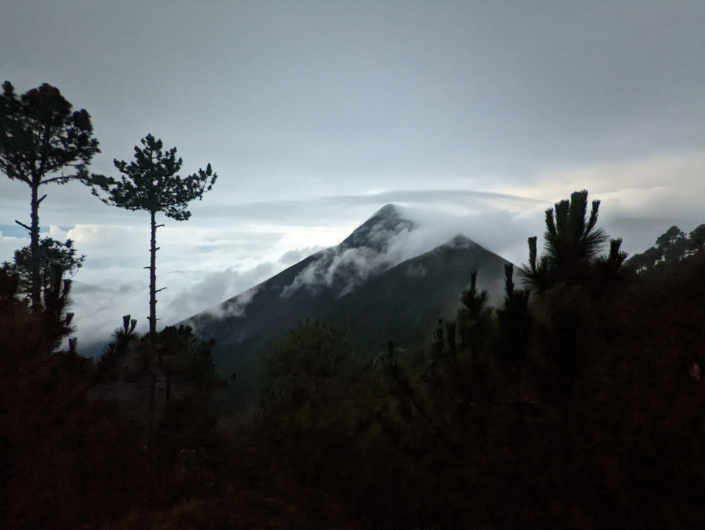

Exploring Guatemala
Antigua ****
Antigua Guatemala is a charming city in Central America. It's famous for its old, colorful buildings and cobblestone streets. The city has lots of history because it was once the capital of Guatemala. You can see beautiful churches and ruins from the past. Many people visit Antigua to enjoy its relaxed atmosphere, delicious food, and vibrant culture. It's a lovely place to explore and experience a bit of Guatemala's rich heritage.

// "Mercado de Artesanías" market is located near the city's central square and offers a wide variety of handmade crafts, textiles, jewelry, pottery, and souvenirs.
Lake Atitlán ****
Lake Atitlán is a big, stunning lake in Guatemala. It's surrounded by tall mountains and little villages. The lake is really deep and clear, making it a popular place for swimming and boating. People love to visit Lake Atitlán to relax, enjoy the beautiful views, and learn about the local Mayan culture. It's like a peaceful, natural gem in the heart of Guatemala.

//Lake Atitlán in Guatemala is surrounded by diverse towns, each offering something unique. Panajachel is the bustling gateway, San Pedro is known for nightlife, Santiago for Maya culture, San Marcos for relaxation, Santa Cruz for seclusion, and San Juan for art and coffee. Together, they make Atitlán an enchanting destination blending culture and nature.
Acatenango Volcano ****
Acatenango Volcano is a majestic natural wonder in Guatemala, rising proudly above the landscape. This towering volcano attracts adventurers from around the world who seek an unforgettable hiking experience. The ascent to its summit is a challenging journey, but the reward is well worth the effort. From the top, you're greeted with breathtaking panoramic views of the surrounding mountains and valleys. What makes Acatenango even more extraordinary is its close proximity to the active Fuego Volcano, which often puts on a fiery display of lava and ash, creating a thrilling spectacle. Camping on Acatenango's slopes allows you to witness the awe-inspiring eruptions of Fuego while gazing at a star-studded sky. It's a memorable adventure that combines the beauty of nature with the raw power of volcanic forces, making Acatenango a must-visit destination for nature enthusiasts and thrill-seekers alike.
//Acatenango Volcano is known for its spectacular eruptions. The nearby active Fuego Volcano frequently puts on a fiery display, shooting ash and lava into the sky.
My favorite spots:
- Street Food Evening Tour in Antigua
- Hobbitenango
- Hike Acatenango
- Mayan cooking class